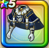

フォースコート上
攻略班 8.0点 / デイン属性耐性+5%バギ属性耐性+5%デイン属性耐性+5%メラ属性耐性+5%【魔法戦士】ヒャド属性ダメージ+1%ヒャド属性斬撃・体技ダメージ+5%
くわしい特徴
【レベル別習得スキル】 Lv1デイン属性耐性+5% Lv8さいだいMP+5 Lv10バギ属性耐性+5% Lv12【魔法戦士】ヒャド属性ダメージ+1% Lv15【魔法戦士】すべての状態異常成功率+3% Lv18ヒャド属性斬撃・体技ダメージ+5% Lv20デイン属性耐性+5% Lv20【魔法戦士】こうげき魔力+5 Lv23守備力+5 Lv25メラ属性耐性+5% 【限界突破スキル】 1凸攻撃力+5 2凸守備力+5 3凸すばやさ+7 4凸さいだいHP+10